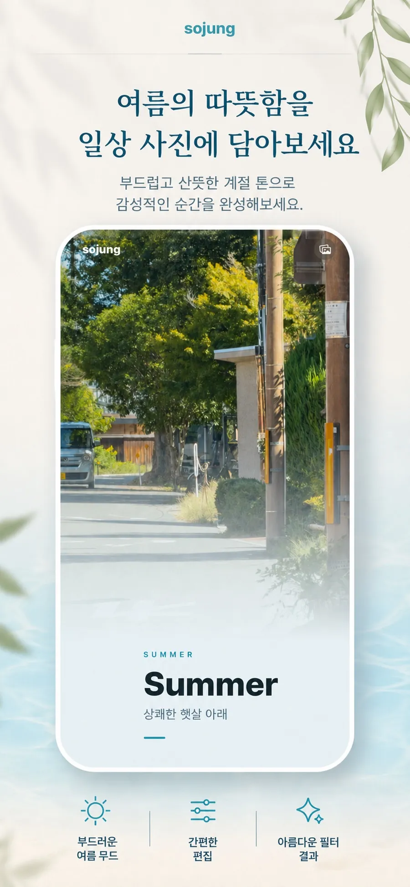
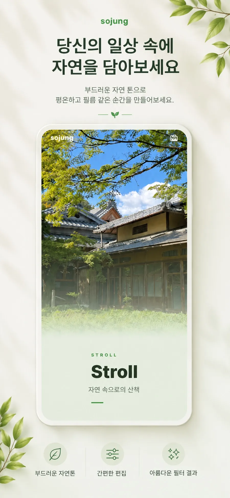

산책
자연 속으로의 산책, 부드러운 풀빛 톤.
평범한 일상 사진과 영상에 부드러운 필름 톤을 입혀요. 다섯 가지 무드 중 하나를 고르고, 강도만 살짝 조절하면 감성적인 한 장이 완성됩니다.
같은 사진도 무드에 따라 완전히 다른 분위기가 돼요. 오늘 기분에 맞는 필름을 골라보세요.
자연 속으로의 산책, 부드러운 풀빛 톤.
상쾌한 햇살 아래, 산뜻한 계절의 빛.
따뜻하게 물든, 아껴 담고 싶은 색.
빛바랜 필름처럼, 아련한 추억의 톤.
고요한 새벽의 푸름, 차분한 무드.
필터를 입힌 뒤에도 강도·그레인·밝기·색온도를 미세하게 조정하고, 비교 슬라이더로 원본과 나란히 확인할 수 있어요.


앨범에서 물들이고 싶은 사진이나 영상을 선택해요.
다섯 가지 필름 무드 중 오늘의 분위기를 골라요.
미세 조정을 마치면 원본 화질 그대로 내보내요.
산책·여름·소중·기억·새벽, 무드별 필름 톤을 담았어요.
사진은 물론 영상에도 필터를 적용해 내보낼 수 있어요.
강도·그레인·밝기·색온도를 디테일하게 다듬어요.
원본과 결과를 나란히 비교하며 마무리해요.
특별할 것 없던 순간도 필름 한 장의 무드를 입으면 오래 간직하고 싶어집니다. 소중필터로 당신의 일상을 물들여보세요.